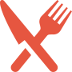

Nossas Atividades
jiu jitsu
jiu jitsu
A ONG Amigo Esperança oferece aulas de jiu-jitsu para crianças e adolescentes, promovendo disciplina, autoconfiança e inclusão. A prática fortalece o corpo e a mente, preparando os jovens para desafios dentro e fora do tatame.
Saiba maiscapoeira
capoeira
A ONG Amigo Esperança oferece aulas de capoeira para crianças e adolescentes, promovendo disciplina, autoconfiança e inclusão. A prática fortalece o corpo e a mente, preparando os jovens para desafios dentro e fora do tatame.
Saiba maiskaratê
karatê
A ONG Amigo Esperança oferece aulas de karatê para crianças e adolescentes, promovendo disciplina, autoconfiança e inclusão. A prática fortalece o corpo e a mente, preparando os jovens para desafios dentro e fora do tatame.
Saiba maisfutebol
futebol
A ONG Amigo Esperança oferece aulas de futebol para crianças e adolescentes, promovendo disciplina, autoconfiança e inclusão. A prática fortalece o corpo e a mente, preparando os jovens para desafios dentro e fora de campo.
Saiba maisinglês
aulas de inglês
A ONG Amigo Esperança oferece aulas de inglês para crianças e adolescentes, promovendo disciplina, autoconfiança e inclusão.
Saiba maisculturais
Atividades culturais
A ONG Amigo Esperança oferece rodas de conversas para crianças e adolescentes, promovendo disciplina, autoconfiança e inclusão. A prática fortalece o corpo e a mente, preparando os jovens para desafios dentro e fora do tatame.
Saiba maismusicais
aulas de música
A ONG Amigo Esperança aulas de música para crianças e adolescentes, promovendo disciplina, autoconfiança e inclusão. A prática fortalece o corpo e a mente.
Saiba mais
meditação
aulas de meditação
A ONG Amigo Esperança oferece aulas de meditação para crianças e adolescentes, promovendo disciplina, autoconfiança e inclusão. A prática fortalece o corpo e a mente, preparando os jovens para desafios dentro e fora do tatame.
Saiba maisyoga
yoga
A ONG Amigo Esperança oferece aulas de yoga para crianças e adolescentes, promovendo disciplina, autoconfiança e inclusão. A prática fortalece o corpo e a mente, preparando os jovens para desafios dentro e fora do tatame.
Saiba maisalimentação
Atividades recreativas
A ONG Amigo Esperança oferece refeições para crianças e adolescentes.
Saiba mais- Fundada em 2008
- 16 anos
- Crianças atendidas
- +100
- Unidade I
- Erich Belz
- Unidade II
- Vila Jensen
Suas doações apoiam nossa capacidade de atender mais de 100 alunos anualmente e a continuar transformando vidas em Blumenau.
doe agora- R$ 0
- Apoia a aquisição de novos materiais didáticos
- 
- R$ 0
- Apoia o projeto alimentar na aquisição de refeições para as crianças
- R$ 0
- Apoia na elaboração de novos eventos
- R$ 0
- Apoia o trabalho mensal de um professor da ONG